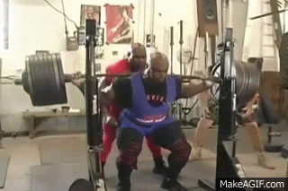
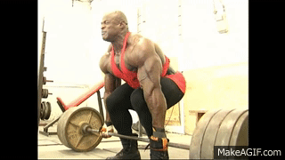
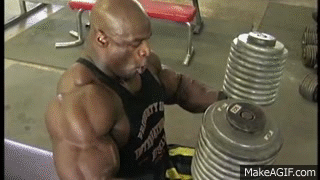

Weightlifting is crucial in an exercise plan to burn calories and increase
muscle growth.For optimal muscle growth, 8-12 reps is reccomended and most
sets shoud be close to or till failure. Although 8-12 is best for growing
muscle (hyterprophy), anywhere from 1-7 reps is best for building strenth
and any range past 13 is best for building muscular endurance.
Some people think that crossft is a good form of weightlifting.
These are the same people that prefer skim milk, have mullets,
and are usually on some kind of fad diet. Don't make their mistake and choose
to lift by sacrificing all form in exchange for looking cool while doing it.
If you do choose to go this route, be aware that you will be outcast from
the broader weightlifting community.
<<<<<<< HEAD
=======



>>>>>>> 81d3230c37a6604f1114b79bec370f115bac0380